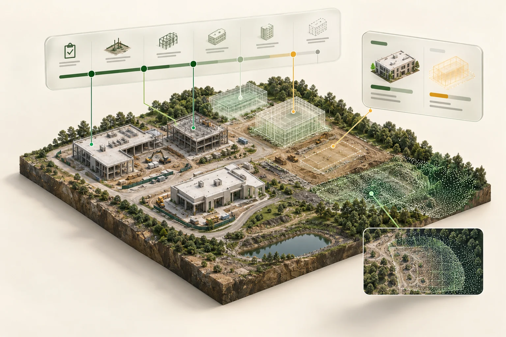

Engineering document
automation.
A clearer handover workflow, from submission to review and reusable information.
- MY CONTRIBUTION
- Process analysis → application development → operational support
 CONCEPT / WORKFLOW AUTOMATION
CONCEPT / WORKFLOW AUTOMATIONI turn manufacturing workflows into practical software and connected data.
Process analysis. Full-stack development. Production ownership.

01 / SELECTED WORK
Start with three representative projects. Each case study explains the problem, my contribution, and the high-level direction.
A clearer handover workflow, from submission to review and reusable information.
CONCEPT / WORKFLOW AUTOMATION CONCEPT / DIGITAL ENGINEERING↗
CONCEPT / DIGITAL ENGINEERING↗Select equipment in 3D and bring its operating context, maintenance information, and related records into view.
View project ↗
CONCEPT / SPATIAL ANALYTICS↗Bring visual site context and planned work into a clearer progress review.
View project ↗ CONCEPT / ENGINEERING INFORMATION↗
CONCEPT / ENGINEERING INFORMATION↗Drawing knowledge + information quality
View project ↗ CONCEPT / DATA FOUNDATIONS↗
CONCEPT / DATA FOUNDATIONS↗Data quality + business process consistency
View project ↗ CONCEPT / OPERATIONS & ANALYTICS↗
CONCEPT / OPERATIONS & ANALYTICS↗Operational engineering + useful analytics
View project ↗02 / AI-ASSISTED ENGINEERING
I author and reuse SKILL.md files: Markdown instruction documents that AI agents load for specific tasks. They capture design rules, coding conventions, workflow steps, and validation criteria.
Document the task, rules, expected output, and checks in SKILL.md.
Reuse the same written instructions across relevant AI-assisted changes.
Check generated interfaces, code, and tests against the intended behavior.
ui-design/SKILL.mdInterface conventions, reusable visual patterns, and review criteria.
coding-standards/SKILL.mdDevelopment rules and workflow guidance for consistent code changes.
test-generation/SKILL.mdInstructions for generating relevant test scenarios and checking expected behavior.
Illustrative filenames showing how reusable agent instructions can be organised.
Here, “skill” means an AI-agent instruction file. This portfolio uses AI-assisted design and development, with AI-generated concept imagery. My focus is directing the work with explicit instructions, then reviewing and validating the result.
03 / ABOUT TJ
I’m Taekjun (TJ) Lee, a systems and automation engineer at Samsung Electronics.
My work connects manufacturing operations, web applications, data, and delivery. I combine business-process understanding with hands-on implementation and ongoing operational responsibility.
Let’s connect ↗Python · FastAPI · JavaScript · Vue.js
SQL · AWS · CI/CD · Linux · Data integration
M.S. Industrial Engineering
B.S. Mechanical Engineering
NEXT / LET’S CONNECT